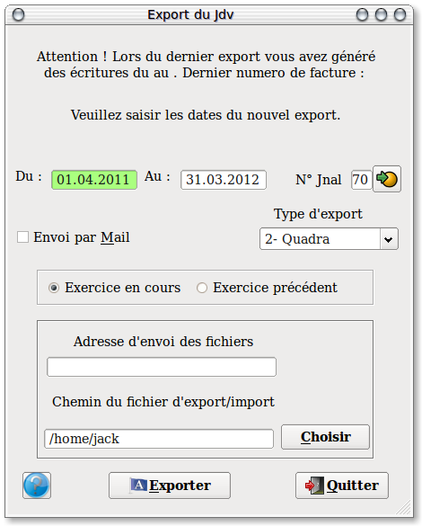
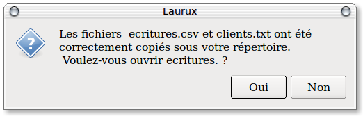
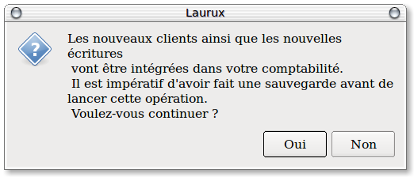

~ Comptabilité Laurux ~

~ Comptabilité Laurux ~ |
|
|
|
Ce programme vous permet
soit d'exporter vos écritures pour votre expert comptable soit si vous
avez plusieurs sites équipés de Laurux de les exporter coté sites
distants puis d'effectuer un import sur le site principal. Pour les
experts comptables on peut faire l'export des journaux dans un fichier
texte ou un fichier
d'export préalablement défini pour Quadra, Ciel, CCMX WINNER. Pour les
exports des sites distants il faudra choisir le format texte.
Le fichier texte généré par laurux aura le format suivant:
1- Code comptable du compte.
2- Intitulé du compte.
3- Date de l'écriture sous la forme JJ.MM.AAAA
4- Numéro de document.
5- Libellé de l'écriture.
6- Débit.
7- Crédit.
8- Solde.
Au préalable, il faudra aller dans le menu des préferences afin de completer les zones interéssées (Adresse et chemin du fichier d'export ainsi que les coordonnées de votre mail). Ces zones seront mémorisées et seront par la suite proposées par défaut.
Coté export, il faudra cocher le bouton " Export " ainsi que le bouton " Envoi par mail " si le fichier généré doit être expédié automatiquement par mail à l'adresse indiquée dans la zone adresse mail du site distant.
Principe d'utilisation de l'export/import.
- Coté export.
Premiérement, à partir du site ou doit s'effectuer l'export des écritures, donc du lieu ou s'effectue la facturation, aller en Comptabilité,aller dans le menu "Outils" et lancer le programme d'export des journaux.

Hormis le code du journal des ventes, toutes les valeurs sont proposées. Modifier ce qui vous interresse puis cliquer sur le bouton " Exporter ".

- Coté import.
A partir du site ou doit s'effectuer l'import des écritures, donc du lieu ou s'effectue la comptabilité, aller en Comptabilité, aller dans le menu "Outils" et lancer le programme d'import du JDV.Si vous avez bien copié les deux fichiers "clients.txt" et "ecritures.txt" et que le chemin proposé soit bon alors cliquez sur le bouton " Importer ".

Le programme vous rappelle que vous devez avoir fait une sauvegarde avant de lancer le programme.
----------------------------------------------------------------------------------------------------------------------